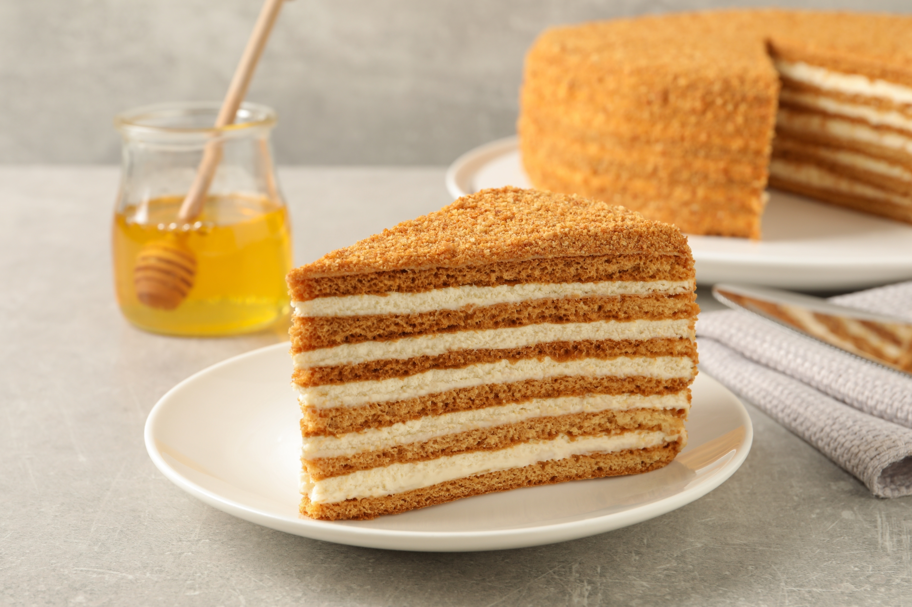

Рецепт Медовик

Ингредиенты:
- 3 яйца
- 1 стакан сахара
- 100 г меда
- 1/2 стакана масла (сливочного или растительного)
- 2 чайные ложки соды
- 3-4 стакана муки (по необходимости)
- 1 стакан сметаны
- 1 стакан сахара (для крема)
- 1 пакетик ванильного сахара (по желанию)
Приготовление:
- Приготовление теста:
- В глубокой миске взбейте яйца с сахаром до пышной массы.
- Добавьте мед, растопленное масло и соду. Хорошо перемешайте.
- Постепенно добавляйте муку, замешивая тесто. Оно должно быть мягким и эластичным.
- Выпекание коржей:
- Разделите тесто на 6-8 равных частей.
- Каждую часть раскатайте в тонкий корж (около 3-5 мм). Выпекайте коржи в разогретой до 180°C духовке 5-7 минут до золотистого цвета.
- Приготовление крема:
- В отдельной миске смешайте сметану с сахаром и ванильным сахаром до получения однородной массы.
- Сборка торта:
- На первый корж выложите немного крема, распределите равномерно.
- Сложите коржи друг на друга, прослаивая каждый кремом.
- Оставшийся крем нанесите на верхний корж и боковые стороны торта.